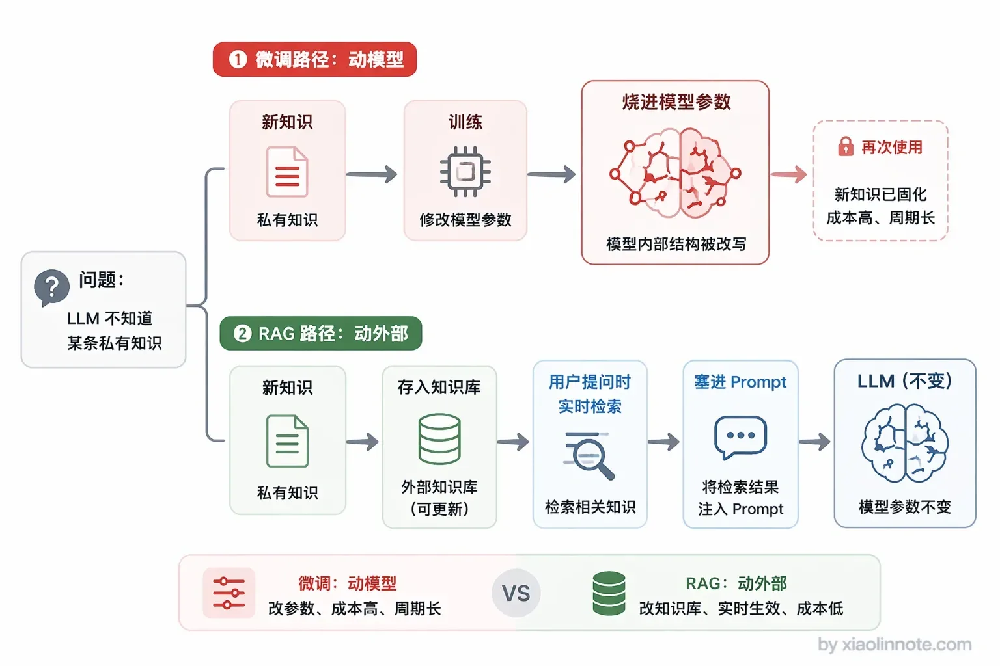
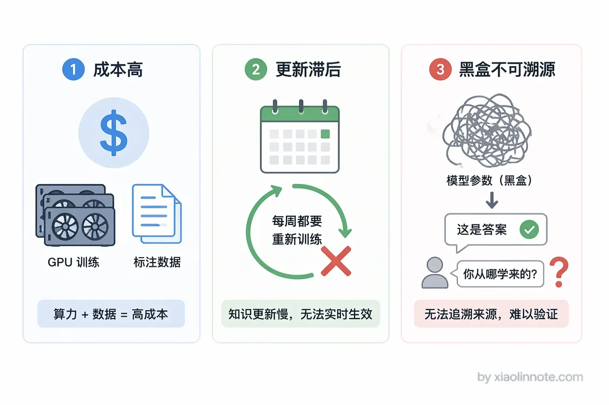
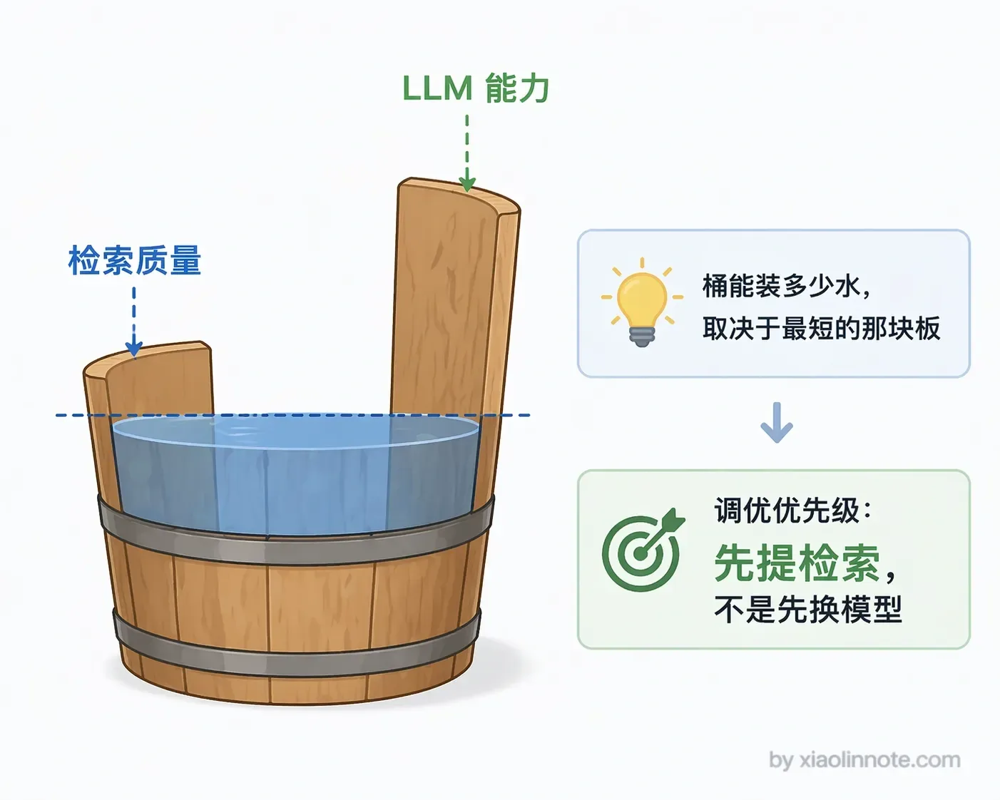
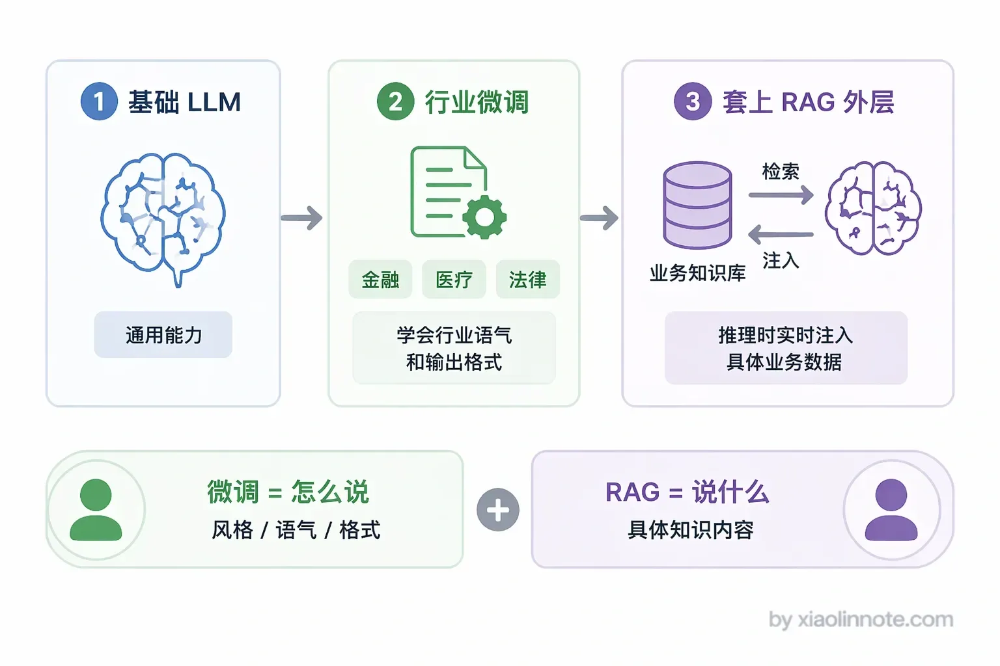

相比直接微调 LLM，RAG 解决了什么问题？微调和 RAG 各自的优劣势是什么？
👔面试官：RAG 和微调（Fine-tuning）有什么区别？各自适合什么场景？
🙋♂️我：微调就是拿自己的数据训练一下模型，RAG 也是拿自己的数据训练一下模型，只是方法不同。
👔面试官：……RAG 根本不训练模型，它是在推理时检索知识注入 prompt。你连这两个方案的本质区别都没搞清楚，一个改参数，一个不改参数，怎么能说「方法不同」呢？
🙋♂️我：好吧，那微调肯定更好吧？直接把知识写进模型，RAG 每次都要检索多麻烦。
👔面试官：更好？你公司的业务数据每周都在变，你每周都重新微调一遍？微调的成本你算过吗？而且微调出来的模型回答问题，你能追溯到是哪条知识在起作用吗？
🙋♂️我：呃……那我就选 RAG 呗，反正微调不好。
👔面试官：谁说微调不好了？你要让模型学会特定的输出格式、行业语气，微调才是正解。两个方案各有所长，还可以组合使用，你为什么非要二选一？
确实，这道题最容易犯的错就是二选一思维。下面我把微调和 RAG 的区别讲透，让你面试的时候能说清楚什么时候用哪个，什么时候两个一起用。
💡 简要回答
我的理解是这两个东西解决的不是同一层面的问题，不是谁替代谁的关系。
微调会更新模型参数，主要用于行为、格式、风格或任务适配；它不等于可靠地建立一个可更新知识库。RAG 在推理时检索外部知识，适合需要更新、权限过滤或来源关联的场景。
如果是知识库问答，我会先评估 RAG，因为知识可独立更新并能保留来源；如果目标是固定输出格式、风格或工具策略，再考虑微调。两者都要用自己的数据集和成本/延迟预算验证。
实际上这两个方案也可以组合用：微调改变行为或格式，RAG 提供当前、可授权的事实；先后顺序要按模型接口和评估结果决定。
📝 详细解析
要搞清楚这个问题，先得理解 LLM 知识的本质。LLM 的「知识」是训练时通过海量文本学到的，最终以权重参数的形式固化在模型里。你可以把它理解成「把知识烧进了 ROM」，训练完成之后，这些知识就刻在那里了，不会自己更新。这意味着训练完之后，模型就不再「成长」了，它不知道新发生的事，也不知道你的私有数据。
理解了「LLM 的能力和部分知识编码在参数里」，就能看到微调和 RAG 并不是同一问题的两种实现：微调主要改变模型行为/任务适配，RAG 主要在推理时提供外部依据。

微调（Fine-tuning）：把知识直接烧进模型
微调是直接更新模型参数的方案。用任务数据继续训练，可以让模型更稳定地遵循格式、风格或特定任务模式；它可能学习到数据中的知识模式，但不是可查询、可逐条溯源的事实库，也不保证“记住”每条知识。
听起来很美好对吧？但微调的代价也很明显。
首先是成本，需要准备标注数据、租用 GPU、跑训练，时间和金钱成本都不低。
其次是知识更新的问题：业务数据变化时需要重新训练、评估和发布，周期与成本取决于数据量、训练方式和基础设施，频繁更新会增加运维负担。
第三是不透明，模型的回答来自参数里，你不知道它是从哪条知识推出来的，出错了也很难定位原因。很多人以为微调之后模型就「懂」了你的业务知识，其实模型只是记住了训练数据里的模式，它到底记住了什么、记错了什么，你根本无从得知。

RAG：不改参数，推理时现查知识
RAG 不改模型参数，而是在推理时检索并注入外部知识。知识库更新可以不触发模型训练，但仍需解析、切分、embedding、索引版本、权限同步和回滚。若保留来源 chunk，排错更容易；成本取决于存储、embedding、检索、模型和流量。
但 RAG 也并非完美。
首先是多了检索步骤，整体响应延迟会增加；具体增加量取决于网络、索引、重排、并发和服务部署，应按 P50/P95 实测。
其次是检索质量问题，如果关键 chunk 没被召回，证据型回答的上限会受限；但即使召回正确，LLM 仍可能误读、推理失败或无法完成复杂任务，因此不能把所有问题都归因于检索。
一个重要边界是：对需要外部证据支撑的答案，检索是必要条件之一，但生成层仍负责证据理解、冲突处理、推理、引用和拒答。调优应同时测召回、重排、生成忠实性和端到端正确性，而不是永远只换检索或只换更强 LLM。

第三是对复杂推理能力提升有限，RAG 只是提供参考资料；如果任务需要特定行为或稳定格式，可能需要 Workflow、工具校验或微调，但微调也不自动产生正确推理。
组合使用：微调解决「怎么说」，RAG 解决「说什么」
聊到这里你可能会问，既然各有优劣，那能不能两个都用？当然可以，而且实际工程里这恰恰是最常见的做法。一个典型的组合是：先对基础模型做一轮微调，让它学会输出格式、语气风格、行业术语；再用 RAG 来提供具体的知识内容。微调解决「怎么说」，RAG 解决「说什么」，各司其职。

把两种方案的核心差异对比起来，选型的时候更好做判断：
| 维度 | 微调（Fine-tuning） | RAG |
|---|---|---|
| 知识更新 | 需要重新训练、评估和发布 | 可更新知识库，但要完成索引发布、版本切换和权限同步 |
| 推理延迟 | 低，无额外检索步骤 | 较高，多一次检索耗时 |
| 实现成本 | 高，需要训练数据与算力 | 需要解析、索引、检索、权限和评估，不只是向量库 + Embedding |
| 答案可溯源 | 参数本身不提供逐条来源 | 可关联检索 chunk，但仍需验证引用是否支持答案 |
| 适合场景 | 定制输出风格、深度专业能力 | 私有知识问答、动态更新数据 |
| 知识上限 | 受限于训练数据质量和规模 | 受限于检索质量和 context 长度 |
🎯 面试总结
回到开头那段面试，这道题最忌讳的就是「二选一」思维。
面试官问 RAG 和微调的区别，你要先说清本质：微调是改模型参数，RAG 是不改参数、推理时注入知识。然后各说优劣：微调擅长定制输出风格、培养深度专业能力，但成本高、更新慢、不可溯源；RAG 擅长知识频繁更新、答案可溯源的场景，但多了检索延迟、检索质量卡住上限。
最后一定要提到两者可以组合使用：微调解决「怎么说」，RAG 解决「说什么」。能把这个组合思路讲出来，面试官就知道你不只是背了定义，而是真正理解了怎么在工程里做选型。